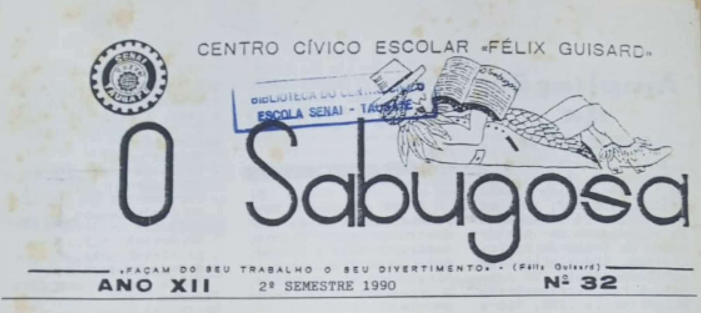

Centro Cívico Escolar
- O Centro Cívico do SENAI Felix Guisard era formado por alunos do Grêmio e um funcionário
responsável. Sua função era representar a escola de forma educativa, com a publicação de jornais
e a arrecadação monetária.
- O jornal produzido pelos alunos era chamado de "O Sabugosa". Ele incluía citações famosas,
páginas de lazer e informações e entrevistas sobre o SENAI Felix Guisard, tudo isso de acordo
com a legislação e regulamento escolar.
- O nome "O Sabugosa" foi uma homenagem ao Visconde de Sabugosa, personagem do Sítio do Pica-Pau
Amarelo, que é um marco histórico e cultural de Taubaté, cidade onde se localiza o SENAI Felix
Guisard.
- O processo de criação e publicação do jornal seguia o regulamento escolar. Os alunos do Centro
Cívico eram responsáveis por sua produção e publicação.
- O Centro Cívico era diretamente ligado ao Grêmio Escolar do SENAI, que era responsável pelas
eleições das chapas para representar a escola.
- As eleições para o Centro Cívico eram realizadas pelos alunos do SENAI, que escolhiam entre as
chapas candidatas. Os representantes eleitos ocupavam os cargos de presidente, vice-presidente,
secretários e tesoureiros.
- Os cargos no Centro Cívico tinham atribuições específicas: o presidente era responsável pela
coordenação das atividades do Centro Cívico; o vice-presidente, por auxiliar o presidente; os
secretários, por registrar as atividades e eventos; e os tesoureiros, por fazer a arrecadação
monetária e investimentos em prol dos alunos.
- Os tesoureiros do Centro Cívico eram responsáveis por arrecadar dinheiro para o SENAI Felix
Guisard e investir em projetos voltados para os alunos, o que atualmente é a AAPM.
